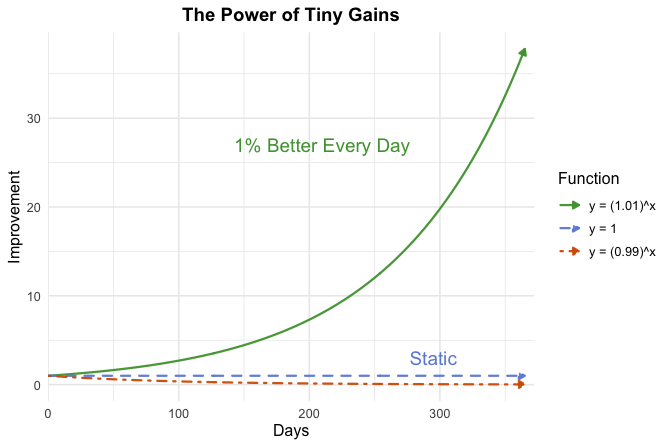
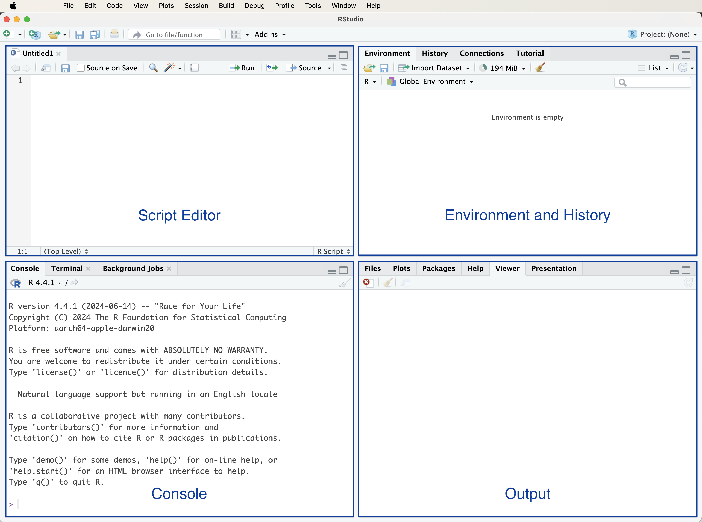
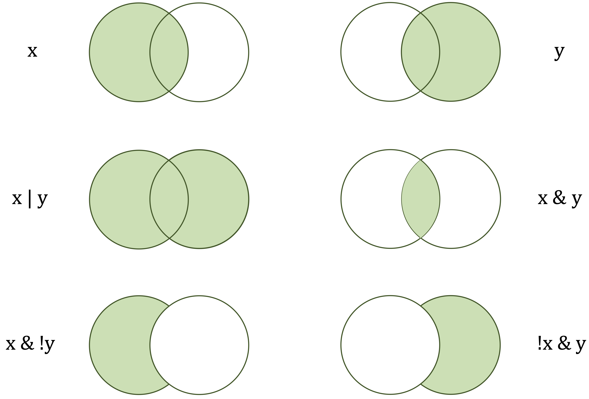
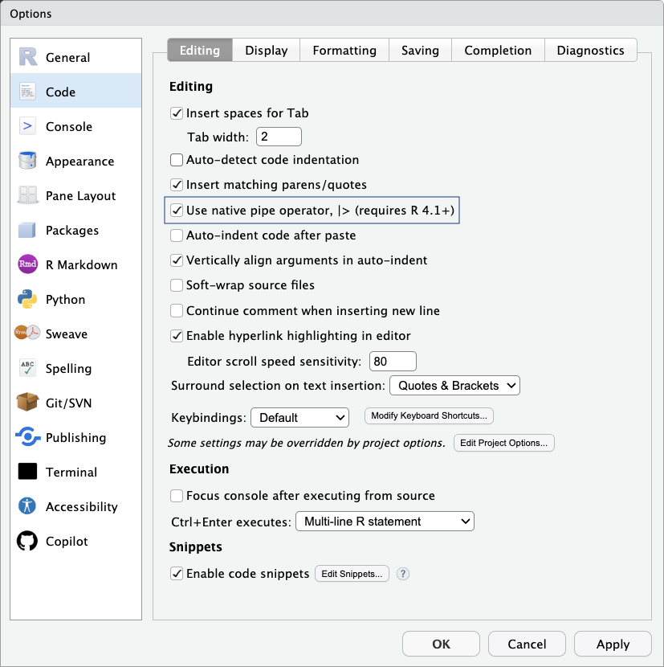
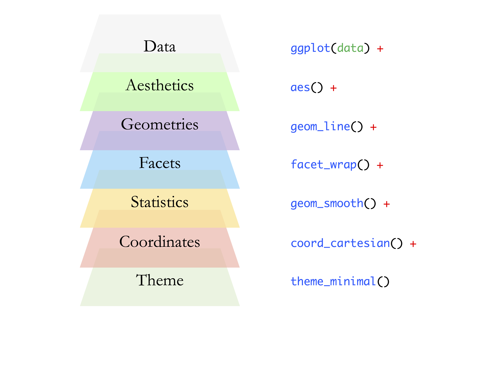

1 R Foundations for Data Science
Programs must be written for people to read, and only incidentally for machines to execute.
What do recommendation systems used by platforms such as YouTube and Spotify, fraud detection algorithms in financial institutions, and modern generative AI systems have in common? Despite their diversity, they all rely on data-driven decision-making. At the core of these systems are programming languages that enable analysts and scientists to process data, build models, and translate results into actionable insight. Within data science, the two most widely used languages are R and Python. Both are extensively adopted across academia, research, and industry, and each brings distinct strengths to data-driven work.
This book is based on R, a programming language specifically designed for statistical computing and data analysis. The aim of this chapter is to provide the practical foundations required to work effectively with the methods and workflows developed throughout the book. By the end of the chapter, you will have installed R and RStudio, become familiar with basic syntax and core data structures, and imported, explored, and visualized a real-world dataset using only a few lines of code. No prior experience with programming is assumed. Curiosity and a willingness to experiment are sufficient.
Readers who are already familiar with R and comfortable working in RStudio may safely skim this chapter or proceed directly to Chapter 2, where the data science workflow and its central concepts are introduced. Even for experienced readers, this chapter can serve as a reference when encountering unfamiliar R code in later chapters or when revisiting foundational operations such as data import, transformation, or visualization.
A common question raised by students concerns the choice between R and Python. Python is a general-purpose programming language that is widely used in software development and has become particularly prominent in deep learning applications. R, by contrast, was designed from the outset for data analysis. It offers a rich ecosystem for statistical modeling, data visualization, and reproducible reporting. In practice, many data science teams use both languages, selecting the most appropriate tool for each task. Readers with prior experience in Python often find it straightforward to learn R, as the two languages share many underlying programming concepts. For readers who prefer Python, a companion volume, Data Science Foundations and Machine Learning with Python: From Data to Decisions, is available from the same publisher. Additional information about both books can be found on the project website: https://datasciencebook.ai.
To illustrate the role of R in practice, consider a dataset containing credit-related and demographic information for bank customers. An analyst may wish to understand why certain clients discontinue their relationship with the bank. Using R, it is possible to summarize customer characteristics, compare financial behavior between churned and retained clients, and create clear visualizations that reveal systematic differences across groups. For example, exploratory analysis may indicate that customers who churn tend to have higher credit limits or lower engagement with bank products. Such findings do not establish causality, but they provide valuable insight that can guide further analysis and support data-driven decision-making. This type of exploratory work is examined in more detail in Chapter 4.
Throughout this book, analysis is organized around a structured framework referred to as the Data Science Workflow. This workflow reflects the iterative nature of real-world data analysis and provides a coherent structure for moving from raw data to actionable conclusions. It consists of seven key steps: Problem Understanding, Data Preparation, Exploratory Data Analysis, Data Setup for Modeling, Modeling, Evaluation, and Deployment. Each chapter of the book focuses on one or more of these steps. The foundational skills introduced in this chapter, including navigating the R environment, importing and manipulating data, and producing basic visualizations, support work at every stage of the workflow. A detailed overview of the workflow is provided in Chapter 2 (see Figure 2.3).
Why Choose R for Data Science?
R is a programming language specifically designed for statistical computing and data analysis. Its design philosophy emphasizes data-centric workflows, making it particularly well suited for tasks such as statistical modeling, exploratory data analysis, and graphical communication. Rather than serving as a general-purpose programming language, R provides a focused environment in which analytical ideas can be expressed concisely and transparently, from simple summaries to more advanced machine learning methods.
One of the principal strengths of R lies in its support for statistical inference and modeling. A wide range of classical and modern methods, including regression models, hypothesis testing, and resampling techniques, are implemented in a consistent and extensible framework. Equally important is R’s strength in data visualization. High-quality graphical output allows analysts to explore patterns, diagnose models, and communicate results effectively. Together, these capabilities make R well aligned with the exploratory and inferential stages of the data science workflow emphasized throughout this book.
Reproducibility is another defining feature of the R ecosystem. Analytical code, results, and narrative text can be integrated into a single, reproducible document, facilitating transparent and verifiable data analysis. This approach is central to modern scientific practice and is increasingly expected in both academic and applied settings. The extensibility of R further enhances reproducibility by allowing analysts to incorporate specialized methods through well-maintained packages.
As a free and open-source language with cross-platform support, R benefits from a large and active global community. Thousands of user-contributed packages are distributed through the Comprehensive R Archive Network (CRAN), providing access to state-of-the-art methods across a wide range of application domains, including epidemiology, economics, psychology, and the social sciences. This community-driven ecosystem ensures that methodological advances are rapidly translated into practical tools for data analysis.
While R is the programming language, most users interact with it through RStudio, an integrated development environment that supports the full analytical workflow. RStudio provides a unified interface for writing and executing code, managing data and packages, visualizing results, and producing reproducible reports. By reducing the technical overhead associated with coding, RStudio allows analysts to focus on statistical reasoning and interpretation. The next sections of this chapter introduce R and RStudio in practice, beginning with installation and basic interaction.
What This Chapter Covers
This chapter is intended for readers with little or no prior experience in programming or data science. It provides a guided introduction to R and to the core concepts required to follow the analytical methods developed in the rest of the book. Drawing on common questions encountered in teaching, the chapter focuses on practical skills that arise when working with real-world data for the first time. Readers are not expected to master every detail on an initial reading. Instead, the material is designed to support gradual learning and experimentation.
The chapter also serves as a reference that can be revisited throughout the book. Readers who already have experience with R may choose to skim this material or consult individual sections as needed when encountering unfamiliar code, data structures, or visualizations in later chapters.
The topics covered include installing R and RStudio and becoming familiar with the RStudio interface; executing basic commands and scripts; working with core data structures such as vectors, data frames, and lists; importing datasets and managing packages; exploring data using standard functions; and creating basic visualizations using ggplot2. In addition, the chapter introduces reproducible reporting through R Markdown, which allows analytical code, results, and narrative text to be combined in a single, transparent workflow.
By the end of the chapter, readers will be able to load, explore, and visualize a real-world dataset using R. These foundational skills form the technical basis for the data science workflow and modeling techniques introduced in subsequent chapters and are revisited throughout the book as analytical complexity increases.
1.1 How to Learn R
Learning R provides access to a wide range of tools for data analysis, statistical modeling, and machine learning. For readers who are new to programming, the initial learning curve may appear challenging. With consistent practice, structured guidance, and appropriate resources, however, progress becomes steady and manageable. Developing proficiency in R is best approached as a gradual process in which understanding builds over time through repeated application.
There is no single pathway for learning R, and different learners benefit from different approaches. Some prefer structured textbooks, while others learn more effectively through interactive exercises or guided tutorials. A widely used reference is R for Data Science (2017), which emphasizes practical data workflows and readable code. For readers entirely new to programming, Hands-On Programming with R (2014) provides an accessible introduction to fundamental concepts. Those with a particular interest in machine learning may consult Machine Learning with R (2019). In addition to textbooks, interactive platforms such as DataCamp and Coursera offer opportunities for hands-on practice, while video-based resources can support conceptual understanding. As experience grows, community-driven forums such as Stack Overflow and the RStudio Community become valuable sources of targeted assistance. These resources are best viewed as complements to this book, which provides a coherent and structured learning path.
Regardless of the resources used, effective learning in R depends on regular and deliberate practice. Working through small, focused tasks, experimenting with example code, and gradually extending analyses to new datasets all contribute to deeper understanding. Errors and unexpected results are a normal part of this process and often provide important insight into how the language and its functions operate.
The importance of incremental progress can be illustrated through the idea of compounding improvement, in which small, consistent gains accumulate over time into substantial skill development. This learning principle is popularized in Atomic Habits by James Clear, where it is described as The Power of Tiny Gains: the notion that modest improvements, when applied consistently, compound over time. Figure 1.1, created entirely in R, visualizes this idea and serves as an early example of how code can be used to explore concepts and communicate patterns through graphics. Rather than attempting to master all aspects of R at once, readers are encouraged to focus on steady advancement, building confidence through repeated successes such as loading data, producing visualizations, and writing simple functions.
With this perspective in mind, the next section turns to the practical task of setting up the working environment. You will begin by installing R and RStudio, which together provide the primary tools for writing, executing, and documenting R code throughout the book.
1.2 Setting Up R
Before working with R, it must first be installed on your computer. R is freely available and distributed through the Comprehensive R Archive Network (CRAN), which serves as the official repository for R software and contributed packages. Installation is platform-specific but follows a standard process across operating systems. By visiting the CRAN website at https://cran.r-project.org, selecting your operating system (Windows, macOS, or Linux), and following the provided instructions, you can install R on your system within a few minutes.
Once installed, R can be used directly through its built-in console. This console allows you to enter commands and immediately view their output, making it suitable for simple experimentation and exploratory tasks. However, as analyses grow in complexity, working solely in the console becomes less practical. For this reason, most users choose to interact with R through an integrated development environment, which supports writing, organizing, and reusing code more effectively. The next section introduces RStudio, a widely used environment that provides these capabilities and supports reproducible analytical workflows.
After installation, it is helpful to be aware of how R is updated and maintained. R is actively developed, with major releases typically occurring once per year and smaller updates released periodically. Updating R ensures access to new language features, performance improvements, and ongoing compatibility with contributed packages. At the same time, frequent updates are not essential for beginners. If your current version of R supports your learning and analysis needs, it is reasonable to continue using it without interruption.
When upgrading to a new major version of R, previously installed packages may need to be reinstalled. To facilitate this process, it is possible to record the names of installed packages using the command:
installed.packages()[, 1]More advanced users may also choose to manage package libraries and project-specific environments using tools such as pak or renv, which support reproducible and portable workflows. Although managing updates may occasionally require additional effort, doing so helps ensure long-term stability and reliability of the analytical environment.
With R now installed and configured, the next step is to set up an environment that supports efficient and structured interaction with the language. In the following section, RStudio is introduced as the primary interface for writing, running, and documenting R code throughout this book.
1.3 Setting Up Your RStudio Environment
After installing R, it is useful to work within a dedicated environment that supports efficient and structured data analysis. RStudio is a free and open-source integrated development environment (IDE) designed specifically for R. It provides a unified interface for writing and executing code, managing data and packages, producing graphical output, and supporting reproducible analytical workflows. These features make RStudio a practical tool for learning R and for conducting data analysis more generally.
RStudio functions as an editor and development environment and does not include the R language itself. For this reason, R must be installed on your system before RStudio can be used.
Installing RStudio
RStudio can be installed directly from the official website. The installation process is straightforward and follows the standard procedure for most desktop applications. To install RStudio, visit the RStudio download page at https://posit.co/download/rstudio-desktop, select the latest free version of RStudio Desktop for your operating system (Windows, macOS, or Linux), and follow the on-screen installation instructions. Once installation is complete, RStudio can be launched to begin working with R.
RStudio is actively maintained and updated to ensure compatibility with recent versions of R and commonly used packages. Keeping RStudio up to date is recommended, as updates often include improvements related to stability, usability, and reproducibility. With RStudio installed, the next step is to become familiar with its interface and the main components that support everyday analytical work.
Exploring the RStudio Interface
When RStudio is launched for the first time, the interface displayed will resemble that shown in Figure 1.2. The RStudio environment is organized into four panels that together support the main stages of an analytical workflow, including writing code, executing commands, inspecting results, and accessing documentation.

In some cases, only three panels may be visible initially. This typically occurs when no script file is open. Opening a new R script adds the script editor panel, which is used to write, edit, and save R code. Working with scripts, rather than entering all commands directly into the console, supports reproducibility and allows analyses to be revisited, modified, and extended over time.
The four main panels of the RStudio interface are as follows:
Script Editor (top left): Used for writing and editing R scripts that contain analytical code.
Console (bottom left): Executes R commands and displays their output immediately.
Environment and History (top right): Displays objects currently stored in memory and provides access to previously executed commands.
Files, Plots, Packages, and Help (bottom right): Supports file navigation, displays graphical output, manages installed packages, and provides access to documentation and help files.
At this stage, interaction with R will primarily take place through the console, where simple commands can be entered and their results examined. As the analyses developed in this book become more involved, you will gradually make use of all components of the RStudio interface to organize code, explore data, visualize results, and document your work.
Customizing RStudio
As you begin working more regularly with R, it can be useful to adjust aspects of the RStudio environment to support efficient and readable analytical work. Customization options allow you to tailor the interface in ways that reduce cognitive load, improve code readability, and support sustained engagement with data analysis over longer sessions.
RStudio provides a range of settings for this purpose through the Global Options menu, which can be accessed via Tools > Global Options. These settings allow users to adapt the appearance and behavior of the interface without altering the underlying analytical workflow.
Among the available options, the Appearance settings allow changes to the editor theme (e.g., selecting Tomorrow Night 80 for dark mode), font size, syntax highlighting, and pane layout. Adjusting these elements can improve visual comfort and make code easier to read and interpret, particularly when working with longer scripts or complex analyses.
Some installations may also include an option to enable AI-assisted code suggestions through tools such as GitHub Copilot. Such tools can be used as a supplementary aid, for example to explore alternative syntax or recall function names. However, they should be used with care, particularly when learning R, as developing a clear understanding of the underlying code remains essential for effective data analysis.
Although these adjustments are optional, thoughtful customization of the working environment can contribute to clearer code, more efficient workflows, and a more consistent analytical experience. With the RStudio environment now configured, the next section turns to strategies for obtaining help and continuing to develop proficiency in R.
1.4 Getting Help and Learning More
As you begin working with R, questions and errors are a natural part of the process. Fortunately, R offers a rich ecosystem of support resources that help users understand function behavior, diagnose problems, and verify analytical results. Effective use of these tools plays an important role in developing reliable and reproducible code.
R includes extensive built-in documentation, which should be the first point of reference when working with unfamiliar functions. Typing ?function_name in the console opens the corresponding help page, describing the function’s purpose, arguments, return values, and example usage. The related functions help() and example() provide additional ways to explore official documentation. Consulting these resources promotes precise understanding and is particularly important when working with statistical methods, where incorrect specification can lead to misleading results.
In addition to the documentation, many users rely on external sources for clarification and practical guidance. AI-based assistants such as ChatGPT can offer flexible, conversational support, for example by helping interpret error messages, suggesting alternative syntax, or illustrating how a function behaves in a simple setting. Community-driven platforms such as Stack Overflow and RStudio Community complement this support by providing answers grounded in collective experience and real-world applications. When using such resources, critical judgment is essential. AI-generated suggestions may be incomplete or context-dependent, and community responses vary in quality. Clearly describing the problem and providing a minimal, reproducible example greatly improves the usefulness of both AI-based and forum-based assistance.
By combining built-in documentation with carefully selected external resources, readers can develop the independence needed to troubleshoot issues, deepen their understanding of R, and apply analytical methods with confidence as they progress through the book.
1.5 Data Science and Machine Learning with R
Data science and machine learning are increasingly used to support decision-making across a wide range of domains, including healthcare, marketing, and finance. Tasks such as predicting hospital readmissions, optimizing marketing strategies, or detecting fraudulent transactions all rely on the ability to work systematically with data, models, and results. This book introduces the core concepts and practical techniques underlying these tasks, using R as the primary programming environment. Readers will learn how to prepare data, build and evaluate models, and communicate insights using reproducible workflows, with methods illustrated throughout using real-world datasets.
R provides a solid foundation for statistical analysis, machine learning, and data visualization. A key strength of R lies in its extensible design, which allows new methods to be implemented and shared through packages. These packages are developed and maintained by a global community of researchers and practitioners and are distributed through the Comprehensive R Archive Network (CRAN), available at https://CRAN.R-project.org. While base R includes essential functionality for data manipulation and basic modeling, many modern data science and machine learning techniques are implemented in contributed packages. A typical R package provides functions for specific analytical tasks, example datasets, and documentation or vignettes that illustrate their use.
Throughout the book, methodological concepts are introduced independently of any specific software implementation and are then linked to appropriate R packages. For example, decision trees and ensemble methods in Chapter 11 are implemented using established packages for tree-based modeling, while neural networks in Chapter 12 are introduced through a dedicated neural network package. This approach emphasizes understanding the underlying methods before applying them in practice and allows readers to focus on interpretation and evaluation rather than software mechanics alone.
To support the examples and exercises consistently across chapters, this book is accompanied by the liver package. This package provides curated real-world datasets and utility functions designed specifically for teaching data science with R. Several of these datasets are summarized in Table 1, and they are reused throughout the book to illustrate different modeling techniques within a common analytical context. This design supports comparability across methods and reinforces the iterative nature of the data science workflow.
Beyond the packages used explicitly in this book, CRAN hosts thousands of additional packages covering a wide range of application areas, including text analysis, time series forecasting, deep learning, and spatial data analysis. As readers gain experience, they will be well positioned to explore these resources independently and to select tools appropriate to their specific analytical goals.
As you progress through the book, the emphasis shifts from learning individual commands to developing fluency in combining methods, packages, and workflows. By the end, you will be equipped not only to use R effectively, but also to navigate its ecosystem with confidence and apply data science and machine learning techniques to real analytical problems.
1.6 How to Install R Packages
Packages play a central role in working with R. They extend the core functionality of the language and enable specialized tasks such as data wrangling, statistical modeling, and visualization. Many of the examples and exercises in this book rely on contributed packages, which are introduced progressively as needed. Installation therefore becomes a routine part of the data science workflow established in this chapter, beginning with the liver package described below.
There are two common ways to install R packages: through the graphical interface provided by RStudio or by using the install.packages() function directly in the R console. The graphical interface is often convenient for beginners, while console-based installation offers greater flexibility and supports scripted, reproducible workflows.
To install a package using RStudio’s interface, open the Tools menu and select Install Packages…. In the dialog box, enter the name of the package (or multiple package names separated by commas), ensure that the option to install dependencies is selected, and then start the installation process. Figure 1.3 illustrates this procedure.

An alternative and more flexible approach is to install packages directly from the R console using the install.packages() function. For example, to install the liver package, which provides datasets and utility functions used throughout this book, the following command can be used:
install.packages("liver")When this command is executed, R downloads the package from the Comprehensive R Archive Network (CRAN) and installs it on the local system. During the first installation, you may be prompted to select a CRAN mirror. Choosing a geographically close mirror typically results in faster downloads.
Practice: Install the liver and ggplot2 packages on your system.
If a package installation does not complete successfully, common causes include network connectivity issues or restricted access due to firewall settings. In addition to installing packages from CRAN, the install.packages() function can also be used to install packages from local files or alternative repositories. Further details can be obtained by consulting the documentation:
?install.packagesPackages only need to be installed once on a given system. However, each time a new R session is started, installed packages must be loaded explicitly using the library() function. This distinction between installing and loading packages reflects the session-based nature of R and is explained in the next section.
1.7 How to Load R Packages
Once a package is installed, you need to load it into your R session before you can use its functions and datasets. R does not automatically load all installed packages; instead, it loads only those you explicitly request. This helps keep your environment organized and efficient, avoiding unnecessary memory use and potential conflicts between packages.
To load a package, use the library() function. For example, to load the liver package, enter:
library(liver)Press Enter to execute the command. If you see an error such as "there is no package called 'liver'", the package has not yet been installed. In that case, return to Section 1.6 to review how to install packages using either RStudio or the install.packages() function.
While installing a package makes it available on your system, loading it with library() is necessary each time you start a new R session. Only then will its functions and datasets be accessible in your workspace.
As you progress through this book, you will use several other packages, such as ggplot2 for visualization and randomForest for modeling, each introduced when needed. Occasionally, two or more packages may contain functions with the same name. When this occurs, R uses the version from the package most recently loaded.
To avoid ambiguity in such cases, use the :: operator to explicitly call a function from a specific package. For example, to use the partition() function from the liver package (used for splitting data into training and test sets), type:
liver::partition()This approach helps ensure that your code remains clear and reproducible, especially in larger projects where many packages are used together.
1.8 Running Your First R Code
One of the defining features of R is its interactive nature: expressions are evaluated immediately, and results are returned as soon as code is executed. This interactivity supports iterative learning and experimentation, allowing users to explore ideas, test assumptions, and build intuition through direct feedback. As a simple example, suppose you have made three online purchases and want to compute the total cost. In R, this can be expressed as a basic arithmetic calculation:
2 + 37 + 61
[1] 100When this expression is evaluated, R performs the calculation and returns the result. Similar expressions can be used for subtraction, multiplication, or division, and modifying the numbers allows you to explore how different operations behave.
Results can be stored for later use by assigning them to a variable. For example:
total <- 2 + 37 + 61 This statement assigns the value of the expression on the right-hand side to the variable named total. More formally, assignment binds a value to a name in R’s environment, allowing it to be referenced in subsequent computations. R also supports the <- assignment operator, which is widely used in existing code and documentation. In this book, however, we will generally use = for assignments to maintain consistency and to align with conventions familiar from other programming languages.
Note: Object names in R must follow certain rules. They cannot contain spaces or special characters used as operators and should begin with a letter. For example,
total valueandtotal-valueare not valid names, whereastotal_valueis valid. Object names are case-sensitive, sototalandTotalrefer to different objects. It is also good practice to avoid using names that are already used by R functions or packages (such asmean,data, orplot), as this can lead to unexpected behavior. Using clear, descriptive names with underscores improves readability and helps prevent errors.
Once a value has been assigned, it can be reused in later expressions. For instance, to include a tax rate of 21%, the following expression can be evaluated:
total * 1.21
[1] 121In this case, R replaces total with its stored value and then evaluates the resulting expression.
Practice: What is the standard sales tax or VAT rate in your country? Replace
1.21with the appropriate multiplier (for example,1.07for a 7% tax rate) and evaluate the expression again. You may also assign the rate to a variable, such astax_rate = 1.21, to make the calculation more readable.
As analyses grow beyond a few lines of code, readability becomes increasingly important. One way to improve clarity is by adding comments that explain the purpose of individual steps. The next section introduces comments and demonstrates how they can be used to document code effectively.
Using Comments to Explain Your Code
Comments help explain what your code is doing, making it easier to understand and maintain. In R, comments begin with a # symbol. Everything after # on the same line is ignored when the code runs. Comments do not affect code execution but are essential for documenting your reasoning, whether for teammates, future readers, or even yourself after a few weeks. This is especially helpful in data science projects, where analyses often involve multiple steps and assumptions. Here is an example with multiple steps and explanatory comments:
# Define prices of three items
prices <- c(2, 37, 61)
# Calculate the total cost
total <- sum(prices)
# Apply a 21% tax
total * 1.21
[1] 121Clear comments turn code into a readable narrative, which helps others (and your future self) understand the logic behind your analysis.
How Functions Work in R
Functions are at the heart of R. They allow you to perform powerful operations with just a line or two of code, whether you are calculating a summary statistic, transforming a dataset, or creating a plot. Learning how to use functions effectively is one of the most important skills in your R journey.
A function typically takes one or more arguments (inputs), performs a task, and returns an output. For example, the c() function (short for “combine”) creates a vector:
# Define prices of three items
prices <- c(2, 37, 61)Once you have a vector, you can use another function to compute a summary, such as the average:
mean(prices) # Calculate the mean of prices
[1] 33.33333The general structure of a function call in R looks like this:
function_name(argument1, argument2, ...)Some functions require specific arguments, while others have optional parameters with default values. To learn more about a function and its arguments, type ? followed by the function name:
?mean # or help(mean)This opens the help documentation, including a description, argument list, and example usage. You will encounter many functions throughout this book, from basic operations like sum() and plot() to specialized tools for machine learning. Functions make your code concise, modular, and expressive.
Throughout this book, you will use many built-in functions, often combining them to perform complex tasks in just a few lines of code. For now, focus on understanding how functions are structured and practicing with common examples.
1.9 Common Operators in R
Operators determine how values are combined, compared, and evaluated in R expressions. They form the foundation of most computations and conditional statements and are used throughout data analysis workflows, from simple calculations to filtering data and defining modeling rules.
Arithmetic operators are used to perform numerical calculations. The most common are +, -, *, /, and ^, which represent addition, subtraction, multiplication, division, and exponentiation, respectively. Their behavior follows standard mathematical rules and operator precedence. Using the variables defined below, these operators can be applied as follows:
x <- 2
y <- 3
x + y # addition
[1] 5
x / y # division
[1] 0.6666667
x^y # exponentiation
[1] 8Relational operators compare values and return logical results (TRUE or FALSE). These logical outcomes play a central role in data analysis, as they are used to define conditions, filter observations, and control program flow. The most commonly used relational operators are == (equal to), != (not equal to), <, >, <=, and >=:
x == y # is x equal to y?
[1] FALSE
x != y # is x not equal to y?
[1] TRUE
x > y # is x greater than y?
[1] FALSELogical operators are used to combine or invert logical values. The operators & (and), | (or), and ! (not) allow multiple conditions to be evaluated jointly and are particularly useful when constructing more complex rules for subsetting data or defining decision criteria. Figure 1.4 illustrates how these logical operators combine conditions.
x > 5 & y < 5 # both conditions must be TRUE
[1] FALSE
x > 5 | y < 5 # at least one condition must be TRUE
[1] TRUE
!(x == y) # negation
[1] TRUE

x) and the right-hand circle (y) represent logical operands. The green-shaded areas indicate which values are returned as TRUE by each operator.
Table 1.1 provides a concise reference overview of commonly used operators in R, grouped by their primary function. This table is intended as a lookup resource rather than material to be memorized. In addition to arithmetic, relational, and logical operators, it also includes assignment operators (introduced earlier in this chapter), as well as membership and sequence operators that are frequently used in data analysis.
Beyond these basic operators, R also provides more specialized operators for tasks such as indexing, formula specification, and model definition, which are introduced in subsequent sections as needed.
| Category | Operator | Meaning |
|---|---|---|
| Arithmetic | +, -, *, /, ^ |
Addition, subtraction, multiplication, division, exponentiation. |
| Relational | ==, !=, <, >, <=, >= |
Comparison (equal to, not equal to, less/greater than, etc.). |
| Logical | &, |, ! |
Logical AND, OR, NOT. |
| Assignment | <-, ->, = |
Assign values to objects. |
| Membership | %in% |
Tests if an element belongs to a vector. |
| Sequence | : |
Generates sequences of numbers. |
Practice: Define
x = 7andy = 5. Compute:x + y,x > y,(x > 1) & (y < 5). Then change the values ofxandyand evaluate the expressions again.
1.10 Special Operators in R
As you begin composing multi-step analyses, a few operators can make R code clearer and easier to read. This section introduces three that you will often encounter in examples, documentation, and online resources: the pipe operators %>% (from the magrittr and dplyr packages) and |> (base R), and the namespace operator ::.
Readers who are new to R do not need to master these operators immediately. The aim here is simply to make you familiar with them, since they frequently appear in online examples and in code generated by AI tools such as ChatGPT. In my experience, students often encounter these operators when seeking help with R, which is why a short overview is included in this book. Pipes express a sequence of operations from left to right. Instead of nesting functions, you write one step per line. This makes data manipulation code more structured and easier to read. The two pipe operators serve the same purpose but differ slightly in syntax and origin.
The %>% operator passes the result of one expression as the first argument to the next function. It is part of magrittr and is widely used in dplyr workflows for data transformation and summarisation:
library(dplyr)
mtcars %>%
select(mpg, cyl) %>%
head()
mpg cyl
Mazda RX4 21.0 6
Mazda RX4 Wag 21.0 6
Datsun 710 22.8 4
Hornet 4 Drive 21.4 6
Hornet Sportabout 18.7 8
Valiant 18.1 6This can be read as: take mtcars, select the variables mpg and cyl, and then display the first few rows. The pipe operator expresses a sequence of operations from left to right, with each step written on a separate line. Even without detailed knowledge of the individual functions, the overall intent of the code is easy to follow.
A similar but simpler operator, |>, was introduced in base R (version 4.1). It behaves much like %>%, passing the output of one expression to the first argument of the next function, but requires no additional packages:
mtcars |>
subset(gear == 4) |>
with(mean(mpg))
[1] 24.53333In general, %>% offers greater flexibility and integrates naturally with tidyverse packages, while |> is ideal for base R workflows with minimal dependencies. Pipes improve readability but are not essential; use them when they simplify logic and avoid long sequences that are difficult to follow.
RStudio provides a convenient keyboard shortcut for inserting the pipe operator (Ctrl/Cmd + Shift + M). You can configure it to use the native pipe |> instead of %>% as shown in Figure 1.5. To do this, open the Tools menu, select Global Options…, and then choose Code from the left panel. Under the Editing tab, check the box labeled Use native pipe operator, |>, and click OK to save your changes.

|>) option under Tools > Global Options > Code > Editing in RStudio.
While pipes control how data move between functions, the :: operator serves a different purpose: it specifies which package a function belongs to. This is particularly useful when several packages define functions with the same name, as it allows you to call one explicitly without loading the entire package:
liver::partition()This approach clarifies dependencies and supports reproducibility, particularly in collaborative projects. Advanced users may encounter :::, which accesses non-exported functions, but this practice is discouraged because such functions may change or disappear in future versions.
Although this book prioritizes data science applications over programming conventions, familiarity with these operators is useful for writing clear, modern, and reproducible R code. Used judiciously, they make analytical workflows easier to read and reason about by expressing sequences of operations explicitly. In later chapters, these operators appear selectively, only when they enhance clarity without obscuring the logic of the analysis.
1.11 Import Data into R
Before you can explore, model, or visualize anything in R, you first need to bring data into your session. Importing data is the starting point for any analysis, and R supports a wide range of formats, including text files, Excel spreadsheets, and datasets hosted on the web. Depending on your needs and the file type, you can choose from several efficient methods to load your data.
Importing Data with RStudio’s Graphical Interface
For beginners, the easiest way to import data into R is through RStudio’s graphical interface. In the top-right Environment panel, click the Import Dataset button (see Figure 1.6). A dialog box will appear, prompting you to choose the type of file you want to load. You can choose from several file types depending on your data source and analysis goals. For example, text files such as CSV or tab-delimited files can be loaded using the From Text (base) option. Microsoft Excel files can be imported via the From Excel option, provided the readxl package is installed. Additional formats may appear depending on your installed packages and RStudio setup.
After selecting a file, RStudio displays a preview window (Figure 1.7) where you can review and adjust options like column names, separators, data types, and encoding. Once you confirm the settings, click Import. The dataset will be loaded into your environment and appear in the Environment panel, ready for analysis.

Importing CSV Files with read.csv()
If you prefer writing code, or want to make your analysis reproducible, you can load CSV files using the read.csv() function from base R. This is one of the most common ways to import data, especially for scripting or automating workflows.
To load a CSV file from your computer, use:
data <- read.csv("path/to/your/file.csv")Replace "path/to/your/file.csv" with the actual file path. If your file does not include column names in the first row, set header = FALSE:
data <- read.csv("your_file.csv", header = FALSE)If your dataset contains special characters, common in international datasets or files saved from Excel, add the fileEncoding argument to avoid import issues:
data <- read.csv("your_file.csv", fileEncoding = "UTF-8-BOM")This ensures that R correctly interprets non-English characters and symbols.
Setting the Working Directory
The working directory is the folder on your computer that R uses as its default location for reading input files and saving output. When you import a dataset using a relative file path, R looks for the file in the current working directory. Understanding where this directory is set helps avoid common errors when loading or saving files.
In RStudio, the working directory can be set through the menu:
Session > Set Working Directory > Choose Directory…
This approach is convenient when exploring data interactively. It ensures that file paths are resolved relative to the selected folder.
The working directory can also be set programmatically using the setwd() function:
setwd("~/Documents") # Adjust this path to match your systemAlthough this method is available, it is generally preferable to avoid repeatedly changing the working directory within scripts, as this can reduce reproducibility when code is shared or run on a different system. Later in this chapter, you will be introduced to project-based workflows that manage file paths more robustly.
To check the current working directory at any time, use the function getwd(). If R reports that a file cannot be found, verifying the working directory is often a useful first diagnostic step. Establishing a clear and consistent file organization early on will support more reliable and reproducible analyses as your projects grow in complexity.
Practice: Use
getwd()to display the current working directory. Then change the working directory using the RStudio menu and rungetwd()again to observe how it changes.
Importing Excel Files with read_excel()
Excel files are widely used for storing and sharing data in business, education, and research. To import .xlsx or .xls files into R, the function read_excel() from the readxl package provides a convenient interface for reading Excel workbooks into data frames. If the package is not yet installed, follow the instructions in Section 1.6. Once installed, load the package and import an Excel file as follows:
library(readxl)
data <- read_excel("path/to/your/file.xlsx")The character string "path/to/your/file.xlsx" should be replaced with the actual path to the file on your system. If the file is located in the current working directory, only the file name is required. Otherwise, a relative or absolute path must be specified.
Unlike read.csv(), which reads a single table per file, read_excel() supports workbooks containing multiple sheets. To import a specific sheet, use the sheet argument, which can refer to either a sheet index or a sheet name:
data <- read_excel("path/to/your/file.xlsx", sheet = 2)This functionality is particularly useful when Excel workbooks contain multiple related tables stored across different tabs. If an Excel file includes merged cells, multi-row headers, or other nonstandard formatting, it is often preferable to simplify the structure in Excel before importing the data, or to address these issues programmatically in R after the import step.
Loading Data from R Packages
In addition to reading external files, R also provides access to datasets that come bundled with packages. These datasets are immediately usable and are ideal for practice, examples, and case studies. In this book, we use the liver package, developed specifically for teaching purposes, which includes several real-world datasets. One of the main datasets is churn, which contains information on customer behavior in a telecommunications context. If you have not installed the package yet, follow the guidance in Section 1.6.
To load the dataset into your environment, run:
library(liver) # To load the liver package
data(churn) # To load the churn datasetOnce loaded, churn will appear in your Environment tab and can be used like any other data frame. This dataset, along with others listed in Table 1, will appear throughout the book in examples related to modeling, evaluation, and visualization. In Chapter 4, you will perform exploratory data analysis (EDA) on churn to uncover patterns and prepare it for modeling.
Practice: After loading
churn, usehead(churn)orstr(churn)to explore its structure and variables.
Using datasets embedded in packages like liver ensures that your analysis is reproducible and portable across systems, since the data can be loaded consistently in any R session.
1.12 Data Types in R
In R, every object (whether a number, string, or logical value) has a data type. Data types determine how R stores values and how functions interpret and operate on them. Recognizing the correct type is essential for ensuring that computations behave as expected and that analyses yield valid results.
The most common data types encountered in data analysis with R are the following:
Numeric: Real numbers such as 3.14 or -5.67. Numeric values are typically stored as double-precision numbers and are used for continuous measurements such as weight, temperature, or income. They support arithmetic operations.
Integer: Whole numbers such as 1, 42, or -6. Integers are useful for counting, indexing rows, or representing categorical values with numeric codes. In R, integers must be created explicitly (for example, using 1L); otherwise, whole numbers are usually stored as numeric values.
Character: Text values such as "Data Science" or "Azizam". Character data are used for names, descriptions, labels, and other textual information.
Logical: Boolean values, TRUE or FALSE. Logical values arise from comparisons and are used for filtering, subsetting, and conditional statements.
Factor: Categorical variables with a fixed set of levels (for example, "yes" and "no"). Unlike character variables, factors explicitly encode category structure and are especially important in modeling and grouped visualizations. Many statistical models in R treat factors differently from character data.
In this chapter, we focus on how R represents data internally through data types. The conceptual distinction between feature types, such as continuous and categorical variables, is introduced and discussed in detail in Chapter 3.3. In the next section, we consider two realistic data frames that show how multiple data types typically coexist within a single dataset.
To check the data type of a variable, use the class() function:
class(prices)
[1] "numeric"This reports the broad class that R assigns to the variable. To inspect how R stores the object internally, use typeof(). To explore the structure of more complex objects, such as data frames, use str():
typeof(prices)
[1] "double"
str(prices)
num [1:3] 2 37 61Why does this matter in practice? Many R functions behave differently depending on data type. Treating a numeric variable as character, or vice versa, can lead to warnings, errors, or misleading results. For example:
income <- c("42000", "28000", "60000") # Stored as character
mean(income) # Returns NA with a warning
[1] NAIn this case, R interprets income as text rather than as numbers. You can resolve this by converting the character vector to numeric:
income <- as.numeric(income)
mean(income)
[1] 43333.33Later chapters, including Exploratory Data Analysis (Chapter 4) and Statistical Inference (Chapter 5), demonstrate how different data types influence summaries, visualizations, and model behavior.
Practice: Load the
churndataset from the liver package (see Section 1.11). Usestr(churn)to inspect its structure. Which variables are numeric, character, or factors? Try applyingclass()andtypeof()to a few columns to explore how R represents them internally.
1.13 Data Structures in R
In R, data structures define how information is organized, stored, and manipulated. Choosing the right structure is essential for effective analysis, whether you are summarizing data, creating visualizations, or building predictive models. For example, storing customer names and purchases calls for a different structure than tracking the results of a simulation.
Data structures are different from data types: data types describe what a value is (e.g., a number or a string), while data structures describe how values are arranged and grouped (e.g., in a table, matrix, or list). The most commonly used structures in R include vectors, matrices, data frames, lists, and arrays. Each is suited to particular tasks and workflows. Figure 1.8 provides a visual overview of these core structures.

In this section, we explore how to create and work with the four most commonly used data structures in R: vectors, matrices, data frames, and lists, each illustrated with practical examples showing when and how to use them.
Vectors in R
A vector is the most fundamental data structure in R. It represents a one-dimensional sequence of elements, all of the same type; for example, all numbers, all text strings, or all logical values (TRUE or FALSE). Vectors form the foundation of many other R structures, including matrices and data frames.
You can create a vector using the c() function (short for combine), which concatenates individual elements into a single sequence:
# Create a numeric vector representing prices of three items
prices <- c(2, 37, 61)
# Print the vector
prices
[1] 2 37 61
# Check if `prices` is a vector
is.vector(prices)
[1] TRUE
# Get the number of elements in the vector
length(prices)
[1] 3In this example, prices is a numeric vector containing three elements. The is.vector() function checks whether the object is a vector, and length(prices) tells you how many elements it contains.
Note that all elements in a vector must be of the same type. If you mix types (for example, numbers and characters), R will coerce them to a common type, usually character, which can sometimes lead to unintended consequences.
Practice: Create a numeric vector containing at least four values of your choice and use
length()to check how many elements it contains. Then create a second vector that mixes numbers and text, for examplec(1, "a", 3), print the result, and observe how R represents its elements. Finally, useis.vector()to confirm that both objects are vectors.
Matrices in R
A matrix is a two-dimensional data structure in R where all elements must be of the same type (numeric, character, or logical). Matrices are commonly used in mathematics, statistics, and machine learning for operations involving rows and columns.
To create a matrix, use the matrix() function. Here is a simple example:
# Create a matrix with 2 rows and 3 columns, filled row by row
my_matrix <- matrix(c(1, 2, 3, 4, 5, 6), nrow = 2, ncol = 3, byrow = TRUE)
# Display the matrix
my_matrix
[,1] [,2] [,3]
[1,] 1 2 3
[2,] 4 5 6
# Check if it's a matrix
is.matrix(my_matrix)
[1] TRUE
# Check its dimensions (rows, columns)
dim(my_matrix)
[1] 2 3This creates a \(2 \times 3\) matrix filled row by row using the numbers 1 through 6. If you leave out the byrow = TRUE argument (or set it to FALSE), R fills the matrix column by column, which is the default behavior.
Matrices are useful in a wide range of numerical operations, such as matrix multiplication, linear transformations, or storing pairwise distances. They form the backbone of many machine learning algorithms and statistical models. Most core computations in neural networks, support vector machines, and linear regression rely on matrix operations behind the scenes.
You can access specific elements using row and column indices:
# Access the element in row 1, column 2
my_matrix[1, 2]
[1] 2This retrieves the value in the first row and second column. You can also label rows and columns using rownames() and colnames() for easier interpretation in analysis.
Practice: Create a \(3 \times 3\) matrix with your own numbers. Can you retrieve the value in the third row and first column?
Data Frames in R
A data frame is one of the most important and commonly used data structures in R. It organizes data in a two-dimensional layout, rows and columns, where each column can store a different data type: numeric, character, logical, or factor. This flexibility makes data frames ideal for tabular data, similar to what you might encounter in a spreadsheet or database. In this book, nearly all datasets, whether built-in or imported from external files, are stored and analyzed as data frames. Understanding how to work with data frames is essential for following the examples and building your own analyses.
You can create a data frame by combining vectors of equal length using the data.frame() function:
# Create vectors for student data
student_id <- c(101, 102, 103, 104)
name <- c("Emma", "Rob", "Mahsa", "Alex")
age <- c(20, 21, 22, 19)
grade <- c("A", "B", "A", "C")
# Combine vectors into a data frame
students_df <- data.frame(student_id, name, age, grade)
# Display the data frame
students_df
student_id name age grade
1 101 Emma 20 A
2 102 Rob 21 B
3 103 Mahsa 22 A
4 104 Alex 19 CThis creates a data frame named students_df with four columns. Each row represents a student, and each column holds a different type of information. To confirm the object’s structure, use:
class(students_df)
[1] "data.frame"
is.data.frame(students_df)
[1] TRUETo explore the contents of a data frame, try:
head(students_df) # View the first few rows
student_id name age grade
1 101 Emma 20 A
2 102 Rob 21 B
3 103 Mahsa 22 A
4 104 Alex 19 C
str(students_df) # View column types and structure
'data.frame': 4 obs. of 4 variables:
$ student_id: num 101 102 103 104
$ name : chr "Emma" "Rob" "Mahsa" "Alex"
$ age : num 20 21 22 19
$ grade : chr "A" "B" "A" "C"
summary(students_df) # Summary statistics by column
student_id name age grade
Min. :101.0 Length:4 Min. :19.00 Length:4
1st Qu.:101.8 Class :character 1st Qu.:19.75 Class :character
Median :102.5 Mode :character Median :20.50 Mode :character
Mean :102.5 Mean :20.50
3rd Qu.:103.2 3rd Qu.:21.25
Max. :104.0 Max. :22.00Practice: Create a new data frame with at least four rows and three columns of your own choosing (for example, an ID, a name, and a numeric attribute). Display the data frame, check whether it is a data frame using
is.data.frame(), and explore its structure usinghead(),str(), andsummary(). Observe how different column types are represented.
Accessing and Modifying Columns
You can extract a specific column from a data frame using the $ operator or square brackets:
# Access the 'age' column
students_df$age
[1] 20 21 22 19You can also use students_df[["age"]] or students_df[, "age"], try each one to see how they work.
To modify a column, for example, to add 1 to each age:
students_df$age <- students_df$age + 1You can also add a new column:
# Add a logical column based on age
students_df$is_adult <- students_df$age >= 21This creates a new column called is_adult with TRUE or FALSE values.
Data frames are especially useful in real-world analysis, where datasets often mix numerical and categorical variables. For example, in this book, we frequently use the churn dataset from the liver package:
library(liver) # Load the liver package
data(churn) # Load the churn dataset
str(churn) # Explore the structure of the data
'data.frame': 10127 obs. of 21 variables:
$ customer_ID : int 768805383 818770008 713982108 769911858 709106358 713061558 810347208 818906208 710930508 719661558 ...
$ age : int 45 49 51 40 40 44 51 32 37 48 ...
$ gender : Factor w/ 2 levels "female","male": 2 1 2 1 2 2 2 2 2 2 ...
$ education : Factor w/ 7 levels "uneducated","highschool",..: 2 4 4 2 1 4 7 2 1 4 ...
$ marital : Factor w/ 4 levels "married","single",..: 1 2 1 4 1 1 1 4 2 2 ...
$ income : Factor w/ 6 levels "<40K","40K-60K",..: 3 1 4 1 3 2 5 3 3 4 ...
$ card_category : Factor w/ 4 levels "blue","silver",..: 1 1 1 1 1 1 3 2 1 1 ...
$ dependent_count : int 3 5 3 4 3 2 4 0 3 2 ...
$ months_on_book : int 39 44 36 34 21 36 46 27 36 36 ...
$ relationship_count : int 5 6 4 3 5 3 6 2 5 6 ...
$ months_inactive : int 1 1 1 4 1 1 1 2 2 3 ...
$ contacts_count_12 : int 3 2 0 1 0 2 3 2 0 3 ...
$ credit_limit : num 12691 8256 3418 3313 4716 ...
$ revolving_balance : int 777 864 0 2517 0 1247 2264 1396 2517 1677 ...
$ available_credit : num 11914 7392 3418 796 4716 ...
$ transaction_amount_12: int 1144 1291 1887 1171 816 1088 1330 1538 1350 1441 ...
$ transaction_count_12 : int 42 33 20 20 28 24 31 36 24 32 ...
$ ratio_amount_Q4_Q1 : num 1.33 1.54 2.59 1.41 2.17 ...
$ ratio_count_Q4_Q1 : num 1.62 3.71 2.33 2.33 2.5 ...
$ utilization_ratio : num 0.061 0.105 0 0.76 0 0.311 0.066 0.048 0.113 0.144 ...
$ churn : Factor w/ 2 levels "yes","no": 2 2 2 2 2 2 2 2 2 2 ...The str() function provides a concise overview of variable types and values, which is an important first step when working with a new dataset.
Practice: Create a small data frame with three columns: one numeric, one character, and one logical. Then use
$to extract or modify individual columns, and try adding a new column using a logical condition.
Lists in R
A list is a flexible and powerful data structure in R that can store a collection of elements of different types and sizes. Unlike vectors, matrices, or data frames: which require uniform data types across elements or columns, a list can hold a mix of objects, such as numbers, text, logical values, vectors, matrices, data frames, or even other lists. Lists are especially useful when you want to bundle multiple results together. For example, model outputs in R often return a list containing coefficients, residuals, summary statistics, and diagnostics within a single object.
To create a list, use the list() function:
# Create a list containing a vector, matrix, and data frame
my_list <- list(vector = prices, matrix = my_matrix, data_frame = students_df)
# Display the contents of the list
my_list
$vector
[1] 2 37 61
$matrix
[,1] [,2] [,3]
[1,] 1 2 3
[2,] 4 5 6
$data_frame
student_id name age grade is_adult
1 101 Emma 21 A TRUE
2 102 Rob 22 B TRUE
3 103 Mahsa 23 A TRUE
4 104 Alex 20 C FALSEThis list, my_list, includes three named components: a numeric vector (prices), a matrix (my_matrix), and a data frame (students_df). You can access individual components using the $ operator, numeric indexing, or double square brackets:
# Access the matrix
my_list$matrix
[,1] [,2] [,3]
[1,] 1 2 3
[2,] 4 5 6
# Or equivalently
my_list[[2]]
[,1] [,2] [,3]
[1,] 1 2 3
[2,] 4 5 6Practice: Create a list that includes a character vector, a logical vector, and a small data frame. Try accessing each component using
$,[[ ]], and numeric indexing.
1.14 How to Merge Data in R
In real-world data analysis, information is often distributed across multiple tables rather than stored in a single file. For example, customer attributes may be stored separately from transaction records, or survey responses may be split across different data sources. Merging datasets allows related information to be combined into a single data frame, making it possible to perform coherent analysis. As soon as realistic datasets are involved, merging becomes an essential skill, since the data required for analysis rarely arrive in a fully integrated form.
In R, merging relies on the concept of keys: columns that identify which rows in one table correspond to rows in another. A join combines rows by matching values in these key columns, and the type of join determines which observations are retained when matches are incomplete.
In base R, the merge() function provides a flexible way to join two data frames using one or more shared columns:
merge(x = data_frame1, y = data_frame2, by = "column_name")Here, x and y are the data frames to be merged, and by specifies the column or columns used as keys. If multiple columns are used, by can be a character vector. For a successful merge, the key columns must exist in both data frames and should have compatible data types.
Consider the following example data frames:
df1 <- data.frame(id = c(1, 2, 3, 4),
name = c("Alice", "Bob", "David", "Eve"),
age = c(22, 28, 35, 20))
df2 <- data.frame(id = c(3, 4, 5, 6),
age = c(25, 30, 22, 28),
salary = c(50000, 60000, 70000, 80000),
job = c("analyst", "manager", "developer", "designer"))Both data frames contain an id column, which will be used as the merge key. They also share a column named age. When non-key columns appear in both data frames, R automatically renames them in the merged result (for example, age.x and age.y) to avoid ambiguity.
An inner join retains only rows with matching key values in both data frames:
merged_df <- merge(x = df1, y = df2, by = "id")
merged_df
id name age.x age.y salary job
1 3 David 35 25 50000 analyst
2 4 Eve 20 30 60000 managerIn this case, only observations with id values present in both df1 and df2 are included in the result.
A left join retains all rows from the first data frame (df1) and adds matching information from the second data frame (df2). This is achieved by setting all.x = TRUE:
merged_df_left <- merge(x = df1, y = df2, by = "id", all.x = TRUE)
merged_df_left
id name age.x age.y salary job
1 1 Alice 22 NA NA <NA>
2 2 Bob 28 NA NA <NA>
3 3 David 35 25 50000 analyst
4 4 Eve 20 30 60000 managerAdditional options include all.y = TRUE, which performs a right join by retaining all rows from df2, and all = TRUE, which performs a full join by retaining all rows from both data frames. When no match is found for a given row, R inserts NA values in the corresponding columns.
Figure 1.9 provides a visual overview of these join types. It illustrates how observations unique to each data frame and those shared between them are combined under inner, left, right, and full joins, helping clarify why missing values may appear in the merged result.

As a general best practice, it is advisable to check the number of rows before and after a merge. Unexpected changes in row counts or a large number of missing values may indicate mismatched keys, duplicate identifiers, or differences in column types.
In addition to base R, the dplyr package provides join functions such as left_join(), right_join(), and full_join(). These functions use explicit names for join types and integrate naturally with pipe-based workflows. They are introduced in later chapters, where data manipulation is explored in greater depth within the tidyverse framework.
1.15 Data Visualization in R
Data visualization plays a central role in data science by helping transform raw numbers into meaningful patterns and insights. Visual summaries make it easier to identify trends, check assumptions, detect outliers, and communicate results effectively. As shown in Chapter 4, exploratory data analysis (EDA) relies heavily on visualization to reveal structure and relationships that may not be apparent from numerical summaries alone.
A key strength of R lies in its rich visualization ecosystem. From rapid exploratory plots to publication-ready figures, R provides flexible tools for constructing clear and informative graphics. The most widely used system for this purpose is the ggplot2 package. R offers two main approaches to visualization: the base graphics system and ggplot2. While base graphics are well suited for quick, ad hoc plotting, ggplot2 follows a more structured and declarative approach inspired by the Grammar of Graphics. This framework views a plot as a composition of independent components, such as data, aesthetic mappings, and geometric objects. In ggplot2, this philosophy is implemented through the + operator, which allows plots to be built layer by layer in a clear and systematic way.
This book emphasizes ggplot2, and nearly all visualizations, including Figure 1.1 introduced earlier, are created using this package. Even relatively short code snippets can produce clear, consistent, and professional-quality figures.
At its core, a typical ggplot2 visualization is built from three essential components:
- Data: the dataset to be visualized;
- Aesthetics: mappings from variables to visual properties such as position or color;
- Geometries: the visual elements used to represent the data, such as points, lines, bars, or boxes.
These core components can be extended through additional layers that control facets, statistical transformations, coordinate systems, and themes. Together, they form the full grammar underlying ggplot2 visualizations. Figure 1.10 provides a visual overview of the seven main layers that constitute this grammar.

Before using ggplot2, install the package as described in Section 1.6, and then load it into your R session:
library(ggplot2)To illustrate these ideas, consider a simple scatter plot showing the relationship between miles per gallon (mpg) and horsepower (hp) using the built-in mtcars dataset:
ggplot(data = mtcars) +
geom_point(mapping = aes(x = mpg, y = hp))
In this example:
ggplot(data = mtcars)initializes the plot with the dataset;geom_point()adds a layer of points;aes()defines how variables are mapped to the axes.
Most ggplot2 visualizations follow a common template:
ggplot(data = <DATA>) +
<GEOM_FUNCTION>(mapping = aes(<MAPPINGS>))Replacing the placeholders with specific datasets, geometries, and aesthetic mappings allows plots to be built incrementally. Additional layers, such as smoothing lines, facets, or custom themes, can then be added as needed. This consistent structure is used throughout the book to explore, analyze, and communicate insights from data. In the next subsections, we focus in more detail on geom functions, which determine the type of plot that is created, and on aesthetics, which control how data variables are mapped to visual properties such as color, size, and shape.
Geom Functions in ggplot2
In ggplot2, geom functions determine how data are represented visually. Each function whose name begins with geom_ adds a geometric object (such as points, lines, or bars) as a new layer in a plot. Geoms build directly on the layered structure introduced in the previous section: while the dataset and aesthetic mappings describe what is shown, geom functions specify how the data appear on the screen.
Some of the most commonly used geom functions include:
geom_point()for scatter plots;geom_bar()for bar charts;geom_line()for line charts;geom_boxplot()for box plots;geom_histogram()for histograms;geom_density()for smooth density curves;geom_smooth()for adding a smoothed trend line based on a fitted model.
This list is intended as a reference rather than something to memorize. As you work through examples and exercises, you will naturally become familiar with the geoms most relevant to your analyses.
To illustrate the use of a geom function, consider the following example, which visualizes the relationship between miles per gallon (mpg) and horsepower (hp) in the built-in mtcars dataset using a smooth trend line:
ggplot(data = mtcars) +
geom_smooth(mapping = aes(x = mpg, y = hp))
This plot highlights the overall pattern in the data by fitting a smooth curve, helping you assess whether fuel efficiency tends to increase or decrease as horsepower changes.
Multiple geoms can be combined within a single plot to provide richer visual summaries. For example, you can overlay the raw data points with a smooth trend line:
ggplot(data = mtcars) +
geom_smooth(mapping = aes(x = mpg, y = hp)) +
geom_point(mapping = aes(x = mpg, y = hp))
Layers are drawn in the order they are added to the plot. In this case, the smooth curve is drawn first and the points are layered on top, ensuring that individual observations remain visible while still showing the overall trend.
When several layers share the same aesthetic mappings, it is often clearer to define these mappings once, globally, inside the ggplot() call:
ggplot(data = mtcars, mapping = aes(x = mpg, y = hp)) +
geom_smooth() +
geom_point()
Defining aesthetics globally reduces repetition and helps keep code concise and consistent, especially as plots become more complex.
Practice: Using the
churndataset, choose any two numeric variables (for example,transaction_amount_12andtransaction_count_12) and create a scatter plot usinggeom_point(). Focus on exploring the structure of the plot rather than producing a perfect visualization, and describe any general pattern you observe.
Aesthetics in ggplot2
Once a geom function determines what is drawn in a plot, aesthetics control how the data are represented visually. In ggplot2, aesthetics define how variables are mapped to visual properties such as position, color, size, shape, and transparency. These mappings are specified inside the aes() function and allow plots to reflect differences across observations in the data.
For example, the following code maps the color of each point to the number of cylinders in a car:
ggplot(data = mtcars) +
geom_point(mapping = aes(x = mpg, y = hp, color = cyl))
Because color = cyl is specified inside aes(), the color assignment is data-driven: points corresponding to different values of cyl are displayed using different colors. In this case, ggplot2 automatically generates a legend to explain the mapping.
In addition to color, other commonly used aesthetics include size, alpha (transparency), and shape. These can be used to encode additional information visually:
# Varying point size by number of cylinders
ggplot(data = mtcars) +
geom_point(mapping = aes(x = mpg, y = hp, size = cyl))
# Varying transparency (alpha) by number of cylinders
ggplot(data = mtcars) +
geom_point(mapping = aes(x = mpg, y = hp, alpha = cyl))

Not all aesthetics are appropriate in every context, and some work better with certain types of variables than others. At this stage, the goal is not to use many aesthetics at once, but to understand how they can be mapped to data when needed.
When aesthetics are placed outside aes(), they are treated as fixed attributes rather than data-driven mappings. This is useful when you want all points to share the same appearance, for example by setting a constant color, size, or shape:
ggplot(data = mtcars) +
geom_point(mapping = aes(x = mpg, y = hp),
color = "#1B3B6F", size = 3, shape = 2)
In this case, all points are displayed using the same color, size, and shape. Because these attributes are not linked to the data, ggplot2 does not create a legend.
Colors can be specified either by name (for example, color = "blue") or by hexadecimal codes (such as color = "#1B3B6F"). Hex codes provide precise control over color selection and help ensure consistency across figures. The example above uses a medium-dark blue tone that appears throughout this book to maintain a clean and cohesive visual style.
Practice: Using the
churndataset, create a scatter plot oftransaction_amount_12versustransaction_count_12. First, map color to thechurnvariable usingaes(). Then try setting a fixed color outsideaes(). Treat this as an exploratory exercise and reflect on how different aesthetic choices influence interpretation.
With a small set of core elements, such as geom_point(), geom_smooth(), and aes(), ggplot2 makes it possible to construct expressive and informative graphics. In Chapter 4, this foundation is extended to explore distributions, relationships, and trends in greater depth as part of the exploratory data analysis process. For further details, consult the ggplot2 documentation. Interactive visualization tools, such as plotly or Shiny, offer additional possibilities for extending these ideas beyond static graphics.
1.16 Formulas in R
Formulas in R provide a concise and expressive way to describe relationships between variables. They are used extensively in statistical and machine learning methods, particularly in regression and classification, to specify how an outcome variable depends on one or more predictors. Because the same formula syntax is reused across many modeling functions, learning it early helps establish a consistent way of thinking about models in R.
A formula in R uses the tilde symbol ~ to separate the response variable (on the left-hand side) from the predictor variables (on the right-hand side). The basic structure is:
response ~ predictor1 + predictor2 + ...The + symbol indicates that multiple predictors are included in the model. Importantly, formulas describe relationships rather than computations: they tell R which variables are involved and how they are connected, without performing any calculations by themselves.
For example, in the diamonds dataset (introduced in Chapter 3), the price of a diamond can be modeled as a function of its carat weight and categorical attributes such as cut and color:
price ~ carat + cut + colorFormulas can combine numeric and categorical predictors naturally, allowing R to handle different variable types within a unified modeling framework.
When you want to include all remaining variables in a dataset as predictors, R provides a convenient shorthand notation:
price ~ .Here, the dot (.) represents all variables in the dataset except the response variable. This shorthand is useful for rapid exploration, especially with larger datasets, but it should be used with care when many predictors are present.
Conceptually, an R formula is a symbolic object. Rather than triggering immediate computation, it instructs R on how to interpret variable names as columns in a dataset. The left-hand side of ~ identifies what is to be predicted, while the right-hand side specifies which variables are used for prediction. This symbolic representation makes modeling code both readable and flexible.
You will encounter formulas repeatedly throughout this book, including in classification methods (Chapter 7 and Chapter 9) and in regression models (Chapter 10). Because the same formula syntax applies across these techniques, mastering it here will make it easier to build, interpret, and modify models as you progress.
1.17 Reporting with R Markdown
How can an analysis be shared in a way that clearly integrates code, reasoning, and results in a single, coherent document? This question lies at the heart of literate programming, an approach in which narrative and computation are combined within the same source. R Markdown adopts this principle by allowing text, executable R code, and visual output to coexist in a fully reproducible format.
Clear communication is a critical, yet often underestimated, component of the Data Science Workflow. Analyses that are statistically sound and computationally rigorous have limited impact if their results are not presented in a clear and interpretable way. Whether communicating with technical collaborators, business stakeholders, or policymakers, effective reporting requires transforming complex analyses into formats that are both accessible and reproducible.
R Markdown is designed to support this goal. It provides a flexible environment in which code, output, and narrative are tightly integrated, enabling analysts to document not only what results were obtained, but also how they were produced. Reports, presentations, and dashboards created with R Markdown can be updated automatically as data or code changes, helping ensure consistency between analysis and presentation.
Many reproducible research workflows are built around R Markdown in combination with tools such as the bookdown package, which support automated document generation, version control, and synchronized handling of code, figures, and tables. This approach helps ensure that reported results remain accurate and traceable as projects evolve over time.
Unlike traditional word processors, R Markdown documents support dynamic content. Files written in the .Rmd format are executable records of an analysis rather than static documents. A single source file can be rendered into multiple output formats, including HTML, PDF, Word, and PowerPoint, allowing the same analysis to be communicated to different audiences. Extensions such as Shiny can further enhance R Markdown documents by enabling interactive elements, although such features are optional and typically used in more advanced applications.
For readers new to R Markdown, several resources provide accessible entry points. The R Markdown Cheat Sheet, also available in RStudio under Help > Cheatsheets, offers a concise overview of common syntax and features. For more detailed guidance on formatting and customization, the R Markdown Reference Guide provides comprehensive documentation and examples.
R Markdown Basics
Unlike traditional word processors, which display formatting directly as you type, R Markdown separates content creation from rendering. You write your document in plain text and then compile it to produce the final output. During rendering, R executes the embedded code chunks, generates figures and tables, and inserts the results automatically into the document. This workflow helps ensure that the narrative, code, and results remain synchronized, even as the data or analysis changes.
To create a new R Markdown file in RStudio, navigate to:
File > New File > R Markdown
A dialog box appears where you can select the type of document to create. For most analyses and assignments, the “Document” option is appropriate. Other options, such as “Presentation” or “Shiny,” support slides and interactive applications and are typically explored later. After selecting a document type, enter a title and author name, and choose an output format. Common formats include HTML, PDF, and Word. HTML is often recommended for beginners because it renders quickly and provides clear feedback during development.
R Markdown files use the .Rmd extension, distinguishing them from standard R scripts (.R). Each new file includes a built-in template containing example text, code chunks, and formatting. This template is intended as a starting point and can be modified freely as you learn how documents are structured and rendered.
Practice: Create a new R Markdown file in RStudio and render it without making any changes. Then modify the title, add a short sentence of your own, and render the document again. Observe how the output updates in response to these changes.
In the following subsections, we examine how R Markdown documents are structured, beginning with the document header and then introducing code chunks and text formatting.
The Header
At the top of every R Markdown file is a section called the YAML header, which serves as the control panel for your document. It contains metadata that determines how the document is rendered, such as the title, author, date, and output format. This header is enclosed between three dashes (---) at the beginning of the file.
Here is a typical example:
---
title: "Data Science is Awesome"
author: "Your Name"
date: "Today's Date"
output: html_document
---Each entry specifies a key element of the report:
title: sets the title displayed at the top of the document.author: identifies the report’s author.date: records the creation or compilation date.output: defines the output format, such ashtml_document,pdf_document, orword_document.
Additional customization options can be added to the header. For instance, to include a table of contents in an HTML report, you can modify the output field as follows:
output:
html_document:
toc: trueThis is especially useful for longer documents with multiple sections, allowing readers to navigate more easily. Other options include setting figure dimensions, enabling syntax highlighting, or selecting a document theme. These settings offer precise control over both the appearance and behavior of your report.
Code Chunks and Inline Code
One of the defining features of R Markdown is its ability to weave together code and narrative. This is accomplished through code chunks and inline code, which allow you to embed executable R commands directly within your report. As a result, your output, such as tables, plots, and summaries, remains consistent with the underlying code and data.
A code chunk is a block of code enclosed in triple backticks (```) and marked with a chunk header that specifies the language (in this case, {r}). For example:
```{r}
2 + 3
``` [1] 5When the document is rendered, R executes the code and inserts the output at the appropriate location. Code chunks are commonly used for data wrangling, statistical modeling, creating visualizations, and running simulations. To run individual chunks interactively in RStudio, click the Run button at the top of the chunk or press Ctrl + Shift + Enter. See Figure 1.11 for a visual reference.

Code chunks support a variety of options that control how code and output are displayed. These options are specified in the chunk header. Table 1.2 summarizes how these options affect what appears in the final report. For example:
echo = FALSEhides the code but still displays the output.eval = FALSEshows the code but does not execute it.message = FALSEsuppresses messages generated by functions (e.g., when loading packages).warning = FALSEhides warning messages.error = FALSEsuppresses error messages.include = FALSEruns the code but omits both the code and its output.
| Option | Run Code | Show Code | Output | Plots | Messages | Warnings | Errors |
|---|---|---|---|---|---|---|---|
echo = FALSE |
✓ | × | ✓ | ✓ | ✓ | ✓ | ✓ |
eval = FALSE |
× | ✓ | × | × | × | × | × |
message = FALSE |
✓ | ✓ | ✓ | ✓ | × | ✓ | ✓ |
warning = FALSE |
✓ | ✓ | ✓ | ✓ | ✓ | × | ✓ |
error = FALSE |
✓ | ✓ | ✓ | ✓ | ✓ | ✓ | × |
include = FALSE |
✓ | × | × | × | × | × | × |
In addition to full chunks, you can embed small pieces of R code directly within text using inline code. This is done with backticks and the r prefix. For example:
The factorial of 5 is
`r factorial(5)`.
This renders as:
The factorial of 5 is 120.
Inline code is especially useful when you want to report dynamic values, such as sample sizes, summary statistics, or dates, that update automatically whenever the document is recompiled.
Practice: Create a new R Markdown file and add a code chunk that calculates the mean of a numeric vector. Then use inline code to display that mean in a sentence.
Styling Text
Clear, well-structured text is an essential part of any data report. In R Markdown, you can format your writing to emphasize key ideas, organize content, and improve readability. This section introduces a few core formatting tools that help you communicate effectively.
To create section titles and organize your document, use one or more # symbols to indicate heading levels. For example, # creates a main section, ## a subsection, and so on. Bold text is written by enclosing it in double asterisks (e.g., **bold**), while italic text uses single asterisks (e.g., *italic*). These conventions mirror common Markdown syntax and work across all output formats.
Lists are created using * or - at the start of each line. For example:
* First item
* Second itemTo insert hyperlinks, use square brackets for the link text followed by the URL in parentheses, for example: [R Markdown website](https://rmarkdown.rstudio.com). You can also include images using a similar structure, with an exclamation mark at the beginning: .
R Markdown supports mathematical notation using LaTeX-style syntax. Inline equations are enclosed in single dollar signs, such as $y = \beta_0 + \beta_1 x$, while block equations use double dollar signs and appear centered on their own line:
Inline: $y = \beta_0 + \beta_1 x$
Block: $$ y = \beta_0 + \beta_1 x $$Mathematical expressions render correctly in HTML and PDF formats; support in Word documents may be more limited. For a full overview of Markdown formatting and additional options, see the R Markdown Cheat Sheet.
Mastering R Markdown
As your skills in R grow, R Markdown will become an increasingly powerful tool, not only for reporting results but also for building reproducible workflows that evolve with your projects. Mastery of this tool enables you to document, share, and automate your analyses with clarity and consistency.
Several resources can help you deepen your understanding. The online book R Markdown: The Definitive Guide provides a comprehensive reference, including advanced formatting, customization options, and integration with tools like knitr and bookdown. If you prefer structured lessons, the R Markdown tutorial series offers a step-by-step introduction to essential concepts and practices. For learners who enjoy interactive platforms, DataCamp’s R Markdown course provides guided exercises. Finally, the RStudio Community forum is an excellent place to find answers to specific questions and engage with experienced users.
Throughout this book, you will continue using R Markdown, not just to document isolated analyses, but to support entire data science workflows. As your projects become more complex, this approach will help ensure that your code, results, and conclusions remain transparent, organized, and reproducible.
1.18 Exercises
The exercises below are designed to reinforce your understanding of the tools and concepts introduced in this chapter. Begin with foundational tasks, then gradually progress toward more involved data exploration and visualization activities.
Install R and RStudio on your computer.
Use
getwd()to check your current working directory. Then usesetwd()to change it to a location of your choice.Create a numeric vector
numberscontaining the values 5, 10, 15, 20, and 25. Compute its mean and standard deviation.Use the
matrix()function to construct a \(3 \times 4\) matrix filled with the integers from 1 through 12.Create a data frame with the following columns:
student_id(integer),name(character),score(numeric), andpassed(logical). Populate it with at least five rows of sample data. Summarize the data frame usingsummary().Install and load the liver and ggplot2 packages. If installation fails, verify your internet connection and access to CRAN.
Load the
churndataset from the liver package. Display the first six rows usinghead().Use
str()to inspect the structure of thechurndataset and identify the variable types.Use
dim()to report the number of observations and variables in the dataset.Apply
summary()to generate descriptive statistics for all variables inchurn.Create a scatter plot of
credit_limitversusavailable_creditusing ggplot2.Create a histogram of the
available_creditvariable.Create a boxplot of
months_on_book.Create a boxplot of
transaction_amount_12, grouped bychurnstatus. Hint: See Section 4.5.Use
mean()to compute the average number of customer service calls overall, and then separately for customers who churned (churn == "yes").Create an R Markdown report that includes a title and your name, at least one code chunk exploring the
churndataset, and at least one visualization. Render the report to HTML.
More Challenging Exercises
Load the
drugdataset from the liver package and explore its structure usingsummary(). This dataset will be revisited in Chapter 7.Create a scatter plot of
ageversusratio, using both color and shape to distinguish the variabletype.Add a new variable
outcometo thedrugdataset as follows: observations withtype == "A"should have a higher probability of a"Good"outcome, while observations withtype == "B"ortype == "C"should have a lower probability of a"Good"outcome. Use a random mechanism to generate this variable and set a random seed to ensure reproducibility.Create a scatter plot of
ageversusratio, colored by the newly createdoutcomevariable.Create a new categorical variable
age_groupwith three levels:"Young"if age \(\leq 30\),"Middle-aged"if \(31 \leq\) age \(\leq 50\), and"Senior"if age \(> 50\).Calculate the mean value of
ratiofor eachage_group.Use ggplot2 to create a bar chart showing the average
ratiobyage_group.Create a new variable defined as \[\mathrm{risk\_factor} = \frac{\mathrm{ratio} \times \mathrm{age}}{10}.\] Summarize how
risk_factordiffers across levels oftype.Visualize
risk_factorin two ways: first, create a histogram grouped bytype; then create a boxplot grouped byoutcome.Use R and ggplot2 to recreate Figure 1.1, which illustrates the compounding effect of small improvements. First, generate a data frame containing three curves: \(y = (1.01)^x\) (1% improvement per day), \(y = (0.99)^x\) (1% decline per day), and \(y = 1\) (no change). Then use
geom_line()to plot the curves. Customize line colors and add informative labels usingannotate(). Hint: Refer to Section 1.15.Extend the Tiny Gains plot by changing the x-axis label to
"Days of Practice", applying a theme such astheme_minimal(), adding the title"The Power of Consistent Practice", and saving the plot usingggsave()as a PDF or PNG file.In the previous exercise, change the number of days displayed in the plot. Compare the results for 30 days and 365 days. What differences do you observe?
Reflect and Connect
The following questions encourage you to reflect on your learning and connect the chapter content to your own goals.
Which concepts in this chapter felt most intuitive, and which did you find most challenging?
How might the skills introduced in this chapter support data analysis in your own field of study or research?
By the end of this book, what would you like to be able to accomplish with R?